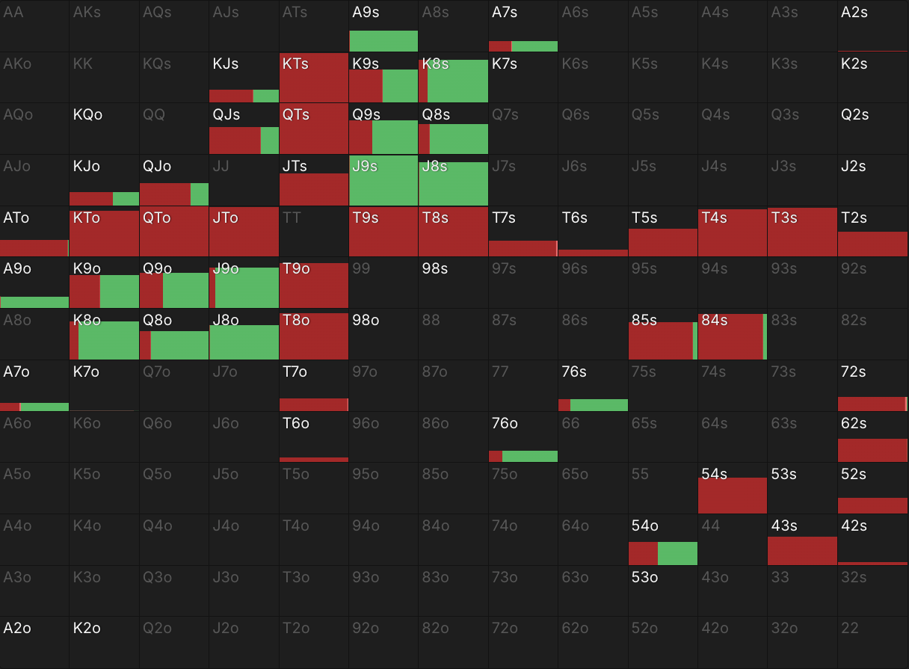

7 / 8XBBXBB poker · 07
從 River 反推 Turn
看 River 策略，猜 Turn
40BB｜BTN open 2.3BB / BB call｜Flop：BB check / BTN check
T♠7♥6♦
Turn：？｜River：2♠
Turn：BB 下注 200% 底池 / BTN call。River：輪到 BB，策略如下。

BB 的 River 策略｜All-in 84%、B34、B10、Check只猜 Turn 點數，不猜花色。答對點數還不夠：為什麼不能是其他牌？
看答案與理由
先用尺寸，找出 Turn 的類別
200% 底池，是超大注。依前面的公式，先看兩類：疊牌 T、7、6；小牌、不成順 5、4、3、2。接著看 River 留下的手牌，一類一類排除。
為什麼不是 T？
看 76s 和 76o。若 Turn 是 T，76 的兩對被疊掉，但圖中仍有 76s、76o 沿 B200 留下。
76s 與 76o，仍沿 B200 留下為什麼不是 7 或 6？
看有入池的同花 7x、6x。若 Turn 開 7 或 6，這些牌會成三條；應有更多沿大注線留下。
為什麼不是 5、4、3？
比較同花兩對候選。75s／65s、74s／64s、73s／63s 沒有明顯沿 B200 留下，較不支持 5、4、3。
答案：Turn 是 2
T♠7♥6♦2♣2♠
72s 與 62s最後看 72s、62s。兩手在 Turn 2 成為兩對，沿 B200 留下；與前面的排除線索一致。
逐個節點，對照策略
GTO Wizard｜MTT 40bb ChipEV｜BB turn 策略
策略色彩對應下注選項；手牌格內數字為 EV。
40BB 有效｜BTN open 2.3BB / BB call｜Flop：BB check / BTN check
T76 turn Q：Qx 打小（帽子牌）
Q6s、Q5s、Q4s、Q3s 的策略BB 的下注尺寸與策略色彩完整策略圖
T76 turn Q：Qx 打小（帽子牌） T76 turn 7：Tx 打大（疊牌）
T7s、T6s、T5s、T4s 的策略BB 的下注尺寸與策略色彩完整策略圖
T76 turn 7：Tx 打大（疊牌） 752 turn 3：7x 打大（小牌 split）
76s、75s、74s、73s 的策略BB 的下注尺寸與策略色彩完整策略圖
752 turn 3：7x 打大（小牌 split） Q98 turn J：Qx 打小（單張成順）
Q5s、Q4s、Q3s、Q2s 的策略BB 的下注尺寸與策略色彩完整策略圖
Q98 turn J：Qx 打小（單張成順） Q98 turn 8：Qx 打小（對手沒那麼 cap）
Q5s、Q4s、Q3s、Q2s 的策略BB 的下注尺寸與策略色彩完整策略圖
Q98 turn 8：Qx 打小（對手沒那麼 cap） Q98 turn 5：好的 Q 打大、頻率不高（小牌公式）
QJs、QTs、Q9s、Q8s 的策略BB 的下注尺寸與策略色彩完整策略圖
Q98 turn 5：好的 Q 打大、頻率不高（小牌公式） T76 turn 9：Tx 打小（單張成順）
T9s、T8s、T7s、T6s 的策略BB 的下注尺寸與策略色彩完整策略圖
T76 turn 9：Tx 打小（單張成順） T76 turn 2：Tx 打大（小牌 split）
T9s、T8s、T7s 的策略BB 的下注尺寸與策略色彩完整策略圖
T76 turn 2：Tx 打大（小牌 split） 752 turn 5：7x 打大（疊牌）
76s、75s、74s、73s 的策略BB 的下注尺寸與策略色彩完整策略圖
752 turn 5：7x 打大（疊牌） 更多撲克策略：YT 搜尋「XBB poker」更多學習簡報：IG 搜尋「@xbbtw」